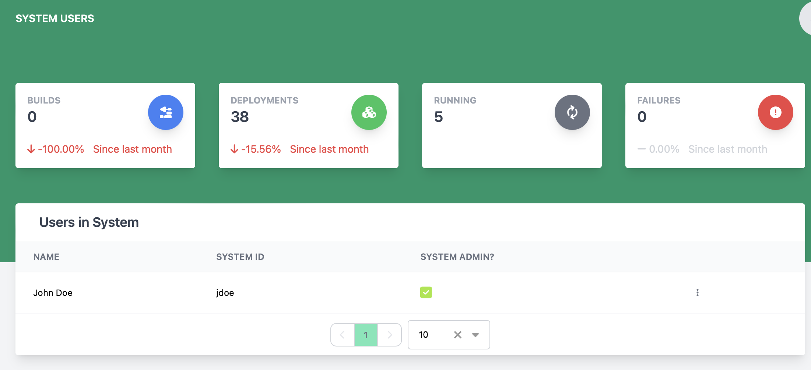

Viewing and Managing System Users
The system users page lets a user manage a list of users in a system.

Heads Up! The following actions can only be performed by administrators of the deployable system!
Remove User from System
To remove a user from a system, find the user to be removed and click the 3 vertical dots to open the action menu and click Remove User.
Make User an Admin in the System
To make a user an admin in a system, find the row with the user to change and click the 3 vertical dots to open the action menu and click Become Admin.
Remove Admin flag from User in the System
To remove the admin flag from a user in a system, find the row with the user to change and click the 3 vertical dots to open the action menu and click Remove Admin.